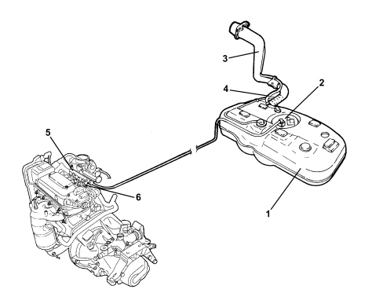

Introduction - FUEL TANK AND PIPES
- Path
- Descriptions > 10 ENGINE > 1040 FUEL TANK AND PIPES > Introduction - FUEL TANK AND PIPES
- Kind
- system description
- Applies to
- engines: 1.4 8v; all production periods
- Interactive page
- https://sloeber94.github.io/elrnDB-fDbl/en/#/2585387
Applies to: engines: 1.4 8v; all production periods
CONSTRUCTION SPECIFICATIONS
The fuel system is "returnless", i.e. with a single pipe connecting fuel tank and engine. The return pipe, filter and pressure regulator have therefore been eliminated. The filter and pressure regulator are built into the pump assembly.
This makes it possible to:
- minimize the possibility of the vehicle catching fire in case of an accident.
- reduce fuel vapour emissions to the atmosphere.
The fuel tank is located in front of the rear axle. It is made out of plastic with high mechanical strength.
COMPOSITION

1. Fuel tank
2. Submerged pump assembly
3. Fuel filler pipe
4. Blow-back pipe
5. Fuel manifold
6. Injectors